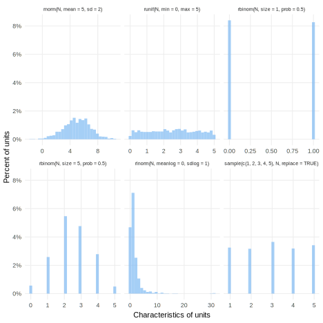

M <- declare_model(N = 1000)13 Designing in code
The software package DeclareDesign provides tools for declaration, diagnosis, and redesign in code using the R statistical package. We introduce each step of the process sequentially in this chapter. The first goal is to get you started using the software for many common types of designs and to illustrate how the software works for a few less common ones. The second aim is to deepen understanding of the four elements of research design and our algorithm for selecting one. By working through each part in code, you get a second shot at grappling with how to build and assess research designs.
13.1 Model
In this section, we describe how to declare models in practice in the DeclareDesign code language. We start with declarations of units and the hierarchical structures that contain them, then move on to declarations of the characteristics of units. An important feature of models is the set of potential outcomes associated with each unit, so we spend some time describing a few approaches for thinking about them. This section is meant as a reference guide so it covers common settings and a few uncommon ones as well.
13.1.1 Units
The model is first defined by the units under study. If there are 1,000 people who live in a city that you wish to learn about, but you don’t know anything else about them, you can declare:
Units often sit within multiple, sometimes overlapping geographic and social hierarchies. Households live on blocks that make up neighborhoods. Workers have jobs at firms and also often are represented by unions that sometimes represent workers in multiple firms (a non-nested hierarchy). These hierarchies are important to declare in the model as they often form the basis for why units are similar and different. Within declare_model, we define hierarchy using add_level, which adds a new level of hierarchy. This model declaration creates 100 households of varying size, then creates the appropriate number of individuals within households.
Panel data have a different structure. For example, in a country-year panel dataset, we observe every country in every year. To create data with this structure, we first declare a country-level dataset, then a years-level dataset, then we join them. The join is accomplished in cross_levels call, which defines the variables we join by with by = join_using(countries, years). In cross_levels, we also create the observation-level outcome variable, which is a function in this case of a country shock, a year shock, an observation shock, and a time trend.
M <-
declare_model(
countries = add_level(
N = 196,
country_shock = rnorm(N)
),
years = add_level(
N = 100,
time_trend = 1:N,
year_shock = runif(N, 1, 10),
nest = FALSE
),
observation = cross_levels(
by = join_using(countries, years),
observation_shock = rnorm(N),
Y = 0.01 * time_trend + country_shock + year_shock + observation_shock
)
)13.1.2 Unit characteristics
We can describe the characteristics of units with either by supplying existing data or generating simulated data.
Here is an example of the simulation approach. We imagine 100 units with a characteristic X that is uniformly distributed between 0 and 100.
M <-
declare_model(
N = 100,
X = runif(N, min = 0, max = 100)
)You can use any of the enormous number of data simulation functions available in R for this purpose. Here we gather six functions we tend to use in our own declarations, but they are by no means exhaustive. Each function has arguments that govern exactly how the data are created; we chose arbitrary values here to show how they work. Figure 13.1 shows what these six look like for a 1,000 unit model.

Binary variables are very important in the socials science, but they can be particularly tricky to make, so we’ll spend a little more time on them. In a common way of thinking, binary variables are translations from a latent, continuous variable into an observed binary outcomes.
We can draw binary outcomes in one of three ways. First, we can simulate a binary outcomes using the rbinom function as we have already seen. The function rbinom(N, size = 1, prob = 0.5) flips 1 coin for each of N subjects with a constant latent probability of success across units.
M1 <-
declare_model(
N = 1000,
Y = rbinom(N, 1, prob = 0.5)
)If you believe the latent probability varies across units, you might want to set up latent variable first before the call to rbinom. A major reason to do it this way is to build in correlation between the binary outcome Y and some other variable, like X in this model declaration.
A third way to create binary variable skips the call to rbinom altogether and creates a binary variable by assessing whether the latent variable exceeds some threshold, here 0.75. A major reason to do this is when we want to control the sources of randomness. The latent variable is random because of the call to the runif function. If we pass the resulting latent probabilities to rbinom as in M2, then we add a second layer of randomness, the coin flips. If one layer is enough, then M3 might be a more appropriate model declaration.
M3 <-
declare_model(
N = 1000,
latent = runif(N, min = 0, max = 1),
Y = if_else(latent > 0.75, 1, 0)
)13.1.2.1 Building in correlations between simulated variables
Most social science variables are interrelated. The correlations between variables may affect the quality of a research design in many ways. If we control for a variable in a regression to improve power, how much power we gain depends on the correlation between that variable and the outcome.
Here we walk through two main ways to create correlated variables. The first way is simply to make one variable a function of another:
The second way draws on an explicit draw from a multivariate distribution. The mvrnorm function in the MASS package generates draws from the multivariate normal distribution. We have to give it two means (mu) and a variance-covariance matrix (Sigma). The draw_multivariate function is a wrapper that makes these functions (that return more than one column of data!) play nicely with declare_model.
13.1.2.2 Building in correlations within clusters
A second important form of correlation is correlation within clusters, described by the intra-cluster correlation coefficient (ICC). When ICC is low, the within-cluster differences are similar across clusters. When it is high, clusters are more homogeneous within themselves and more heterogeneous across themselves. For more on clustered designs for surveys and for experiments, see Section 15.2 and Section 18.3.
We can introduce ICC using the draw_normal_icc function:
M <-
declare_model(households = add_level(N = 1000),
individuals = add_level(
N = 4,
X = draw_normal_icc(
mean = 0,
clusters = households,
ICC = 0.65
)
))13.1.2.3 Drawing on baseline data
In some cases, you will be in possession of baseline data about the units you plan to study. In the model, you can replace simulations with these data, as long as your goal is to make inferences just about those units you have data for. If you have a census of the dwelling characteristics of all houses in Philadelphia and you plan to conduct a survey of homeowner attitudes toward a new tax based on a sample stratified by dwelling type, you don’t need to simulate data for the dwelling characteristics. They are known. You will still need to simulate the data on attitudes, which you have not yet collected.
M <-
declare_model(
data = baseline_data,
attitudes = sample(1:5, N, replace = TRUE)
)13.1.2.4 Drawing on data about similar units
More commonly, you may have data on similar units from past studies or from a pilot study of your own. In these cases, you will not want to take their data as fixed, but resample from the data to simulate the population you are now drawing from. For example, if your baseline data is a random sample of households in Philadelphia, you may want to resample from that data to construct a simulated population of Philadelphia from which you can sample.
M <-
declare_model(
data = baseline_data,
N = 619505,
handler = resample_data
)Drawing on past data holds several advantages. The natural correlations with clusters and across background characteristics are already built-in to your data. Using past data makes declaring your model easier, and in some cases can provide more realistic simulation of the data you end up collecting.
13.1.2.5 Unknown heterogeneity
Most declarations include unobserved variables, or unknown heterogeneity. These Us represent the lurking variables that confound our inferences and the variation in outcomes not correlated with observed values. In virtually every declaration in the book, we include a U term to represent these unobserved values.
At the point of declaration we face problems immediately: how much heterogeneity do we introduce, where, and of what kind?
M1 shows how to make rather benign unknown heterogeneity. U is normally distributed and only affects Y. The observed binary variable X is independent of U and affects Y in its own way.
M2 is more worrisome. U now affects X as well, by affecting the probability of X equaling one. See Section 16.2 for designs that face this sort of problem.
A further question for U is how much it should vary. This question is tougher to answer. U is an important source of variation in outcomes, so it needs to be calibrated in a way that the simulated data look like the data you expect to generate or encounter in the world. So our best advice here is to follow Principle 3.2: Design agnostically to figure out which ones seem reasonable.
13.1.3 Potential outcomes
We declare “potential” outcomes when describing counterfactual quantities.
The most straightforward way to declare potential outcomes is to make one variable per potential outcome. Here the two potential outcomes come from coin flip distributions with different success probabilities.
The potential_outcomes function can do the same thing, but using R’s “formula” syntax, allowing us to write down potential outcomes in a “regression-like” way.
M <-
declare_model(
N = 100,
potential_outcomes(Y ~ rbinom(N, size = 1, prob = 0.1 * Z + 0.5))
)
M()By default, potential_outcomes imagines you are making two potential outcomes with respect to a treatment variable Z that can take on two values, 0 and 1.
| ID | Y_Z_0 | Y_Z_1 |
|---|---|---|
| 001 | 0 | 0 |
| 002 | 0 | 1 |
| 003 | 0 | 0 |
| 004 | 0 | 1 |
| 005 | 0 | 0 |
But we can use potential_outcomes to describe multiple treatment conditions:
| ID | Y_Z_0 | Y_Z_1 | Y_Z_2 |
|---|---|---|---|
| 001 | 0 | 0 | 1 |
| 002 | 0 | 0 | 0 |
| 003 | 0 | 0 | 0 |
| 004 | 0 | 0 | 0 |
| 005 | 0 | 1 | 0 |
Or to describe multiple treatment factors (see Section 18.5 on factorial experiments):
| ID | Y_Z1_0_Z2_0 | Y_Z1_1_Z2_0 | Y_Z1_0_Z2_1 | Y_Z1_1_Z2_1 |
|---|---|---|---|---|
| 001 | 0 | 0 | 1 | 1 |
| 002 | 0 | 0 | 0 | 1 |
| 003 | 0 | 0 | 0 | 1 |
| 004 | 0 | 0 | 0 | 0 |
| 005 | 0 | 0 | 0 | 0 |
13.1.3.1 Effect sizes
We often want to consider a range of plausible effect sizes, for example when estimating the minimum detectable effect of a design. A strategy we commonly use is to sample the treatment effect in the model declaration itself, and then draw the potential outcomes using that single number. When we diagnose many times, then we will get many different treatment effects (here, tau), which we can then summarize in a diagnosis. Section 13.6.1 describes how to create a plot of the power across values of tau.
Where do our expectations about effect sizes, and the minimal plausible effect size, come from? We may conduct meta-analysis of past studies when there are more than one sufficiently relevant estimates of the same effect, or a systematic review or literature review when they are less comparable but we may want to find a range (see Section 18.3 for a discussion of meta-analysis). We may be tempted to conduct a pilot study to estimate the effect size. We need to be careful when doing so what to infer and how much to update from small pilot studies, as we discuss in Section 21.4, but we can often shrink our uncertainty about them. In the absence of pilot studies or past studies to draw on, we need to make educated guesses and understand under what true effect sizes our design will perform well and when it will not following Principle 3.1: Design holistically.
13.1.3.2 Effect heterogeneity
Sometimes, the inquiry centers on treatment effect heterogeneity by subgroups. This heterogeneity has to be present in the model in order for the simulation to pick it up. Here we declare effect heterogeneity according to a binary covariate X. This example really shows off the utility of the formula syntax in the potential_outcomes function. We can write in our expectations about heterogeneity as if they were regression coefficients. Here, the “interaction term” is equal to 0.1.
13.1.3.3 Correlation between potential outcomes
Treated and untreated potential outcomes are typically highly correlated. When treatment effects are exactly homogeneous, the correlation is equal to 1. Rarely are potential outcomes negatively correlated, but it can occur. The sign and magnitude of the correlation especially affects the standard errors of estimates for causal effects (for more discussion of the correlation of potential outcomes in experiments and also standard error estimators, see Section 11.3.1).
We described some complexities of generating binary variables above. They transfer over to the generation of correlated potential outcomes in special ways. In the declarations below, M1 generates uncorrelated potential outcomes, because the draws from rbinom are independent of one another. In M2, we still use rbinom, but with a transformation of the normally-distributed variable into a probability via pnorm. This allows the potential outcomes to be correlated because they are both influence by the same latent variable. Finally, in M3, we generate highly correlated potential outcomes because we peel off the layer of randomness introduced by rbinom.
M1 <-
declare_model(
N = 100,
potential_outcomes(Y ~ rbinom(N, 1, prob = 0.2))
)
M2 <-
declare_model(
N = 100,
latent = rnorm(N),
potential_outcomes(Y ~ rbinom(N, 1, prob = pnorm(latent + 0.2 * Z)))
)
M3 <-
declare_model(
N = 100,
latent = rnorm(N),
potential_outcomes(Y ~ if_else(latent + 0.2 * Z > 0.5, 1, 0))
)13.2 Inquiry
An inquiry is a summary function of events generated by a model. When we declare inquiries in code, we declare this summary function. Here, we declare a causal inquiry, the mean of the differences in two potential outcomes described in the model:
Descriptive inquiries can be declared in a similar way: they are just functions of outcomes rather than potential outcomes.
13.2.1 Inquiries among subsets of units
We often want to learn about an inquiry defined among a subgroup of units. For example, if we are interested in the conditional average treatment effect (CATE) among units with X = 1, we can use the subset argument.
Equivalently, we could use R’s [] syntax for subsetting:
I <- declare_inquiry(CATE = mean(Y_Z_1[X == 1] - Y_Z_0[X == 1]))13.2.2 Inquiries with continuous potential outcomes
“Non-decomposable” inquiries are not as simple as an average over the units in the model. A common example arises with continuous potential outcomes. The regression discontinuity design described in Section 16.5 has an inquiry that is defined by two continuous functions of the running variable. The control function is a polynomial function representing the potential outcome under control and the treatment function is a different polynomial representing treated potential outcomes. The inquiry is the difference in the two functions evaluated at the cut-off point on the running variable. We declare it as follows:
13.2.3 Multiple inquiries
In some designs, we are interested in the value of an inquiry for many units or for many types of units.
We can enumerate them one-by-one, to describe the average treatment effect, two conditional average treatment effects, and the difference between them.
In the multilevel regression and poststratification (MRP) design in Section 15.3, we want to know what the average opinion is in each state.
We declare an inquiry at the county level below. We rely on group_by and summarize from dplyr to write a function MRP_inquiry that uses a pipeline to group the data into counties and take the average of individual values. Now, our design targets an inquiry for each state.
We discuss further in Section 13.4 how to link inquiries to answer strategies, including the case of multiple inquiries.
13.3 Data strategy
The three data strategy functions, declare_sampling, declare_assignment, and declare_measurement share most features in common. All three all add variables to the running data frame. declare_sampling is special in that it has a filter argument that determines which (if any) of the units should be dropped from the data and which should be retained as the sample. declare_assignment, and declare_measurement work in the exact same way as one another. The reason we separate them is to insist on the features of the data strategy, not for a deep programming reason.
13.3.1 Sampling
Declaring a sampling procedure involves constructing a variable indicating whether a unit is sampled or not and then filtering to sampled units. By default, you should create a variable S and declare_sampling will filter to sampled units by selecting those for which S == 1. You can rename your sampling variable or you can create more sampling variable to develop multistage sampling procedures, though you will need to alter the filter argument to reflect your changed procedure.
D <- declare_sampling(S = complete_rs(N = 100, n = 10))For a multistage sample of districts then villages then households, we start out with all the data and sample at each stage then combine the three sampling indicators to form the final indicator S.
D <-
declare_sampling(
# sample 20 districts
S_districts = cluster_rs(clusters = districts, n = 20),
# within each district, sample 50 villages
S_villages = strata_and_cluster_rs(
strata = districts,
clusters = villages,
strata_n = 10
),
# within each village select 25 households
S_households = strata_and_cluster_rs(
strata = villages,
clusters = households,
strata_n = 25
),
S = S_districts == 1 & S_villages == 1 & S_households == 1,
filter = S == 1
)You could also perform each of these steps in separate calls, and the data will be filtered appropriately step-to-step.
D <-
declare_sampling(S = cluster_rs(clusters = districts, n = 20)) +
declare_sampling(S = strata_and_cluster_rs(
strata = districts,
clusters = villages,
strata_n = 10
)) +
declare_sampling(S = strata_and_cluster_rs(
strata = villages,
clusters = households,
strata_n = 25
))For many sampling designs, the probabilities of inclusion are not constant across units. We often need to adjust the answer strategy by reweighting the data according to the inverse of the inclusion probabilities. For common sampling designs in randomizr, we provide a built-in function for calculating these. If you roll your own sampling function, you will need to calculate them yourself. Here we show how to include probabilities from a stratified sampling design.
13.3.2 Treatment assignment
The declaration of treatment assignment procedures works similarly to sampling, but we don’t drop any units. Treatment assignment probabilities often come into play just like sampling inclusion probabilities. You can use randomizr to calculate them for many common designs in a similar fashion, except that for treatment assignment in order to know with what probability you were assigned to the condition you are in we have to know what condition you are in. To obtain condition assignment probabilities we can declare:
D <-
declare_assignment(
Z = complete_ra(N, m = 50),
Z_condition_probability =
obtain_condition_probabilities(assignment = Z, m = 50)
)13.3.3 Measurement
Measurement procedures can be declared with declare_measurement. A common use is to generate an observed measurement from a latent value:
13.3.3.1 Revealing potential outcomes
The most common use of declare_measurement in this book, however, is for the “revelation” of potential outcomes according to treatment assignments. We build potential outcomes in declare_model, randomly assign in declare_assignment, then reveal outcomes in declare_measurement. We use the reveal_outcomes function to pick out the right potential outcome to reveal for each unit.
M <-
declare_model(
N = 100,
potential_outcomes(Y ~ rbinom(N, size = 1, prob = 0.1 * Z + 0.5))
)
D <-
declare_assignment(Z = complete_ra(N, m = 50)) +
declare_measurement(Y = reveal_outcomes(Y ~ Z))13.3.3.2 Index creation
Many designs use multiple measures of the same outcome, which are then combined into an index. For example, here’s a design with three measures of Y that we will combine using factor analysis. Here we use the fa function from the psych package which can be installed with install.packages('psych').
13.4 Answer strategy
An answer strategy is a function that provides answers to an inquiry. Declaring one in code involves selecting that function and linking the answer or answers it returns to one or more inquiries.
The functions we declare in DeclareDesign for answer strategies differ from those for the other elements of research design to reflect the two-step nature of many answer strategies. Often, first a statistical model (e.g., a linear regression) is fit to data, and then summaries of that model fit (e.g., the coefficient on a variable X, its standard error, t-statistic, p-value, and confidence interval) are combined to form an answer and its associated measures of uncertainty.
13.4.1 Statistical modeling functions
In DeclareDesign, we call these two steps .method and .summary (these arguments are preceded by .’s to avoid argument conflicts). The .method argument in declare_estimator can take almost any modelling function in R (e.g., lm for linear regression) and .summary consists of a summary function that calculates statistics from the fit such as tidy or glance. You can write your own model or model summary. When your answer strategy does not fit this two-step structure, you can (as with all declare_ functions) write your own handler.
We break down each part of a standard answer strategy declaration using the example of a linear regression of the effect of a variable Z on an outcome Y in Declaration @ref(def:declaration-13-1}. The first argument in our declare_estimator step defines the method we will use, here lm_robust which is our function in the estimatr package for running linear regressions with robust standard errors. The second is the main argument for lm_robust, the formula for the regression specification, in this case Y on Z with no controls.
Declaration 13.1 Linear regression design
declaration_13.1 <-
declare_model(N = 100,
U = rnorm(N),
potential_outcomes(Y ~ 0.2 * Z + U)) +
declare_inquiry(ATE = mean(Y_Z_1 - Y_Z_0)) +
declare_assignment(Z = complete_ra(N)) +
declare_measurement(Y = reveal_outcomes(Y ~ Z)) +
declare_estimator(
Y ~ Z,
.method = lm_robust,
.summary = tidy,
term = "Z",
inquiry = "ATE",
label = "OLS"
)\(~\)
draw_estimates(declaration_13.1)| term | estimator | estimate | std.error | statistic | p.value | conf.low | conf.high | df | outcome | inquiry |
|---|---|---|---|---|---|---|---|---|---|---|
| Z | OLS | 0.03 | 0.2 | 0.16 | 0.87 | -0.36 | 0.43 | 98 | Y | ATE |
13.4.2 Tidying statistical modelling function output
Let’s unpack the .summary argument. In this case we sent the tidy function from the broom package (the default). Understanding what tidy does opens a window into the way we match estimates and estimands. The tidy function takes many model fit objects and returns a data frame in which rows represent estimates and columns represent statistics about that estimate. The columns typically include the estimate itself (estimate), an estimated standard error (std.error), a test statistic of some kind reported by the model function such as a t-statistic or Z-statistic (statistic), a p-value based on the test statistic (p.value), a confidence interval (conf.low, conf.high), and the degrees of freedom of the test statistic if relevant (df).
A key column in the output of tidy is term, which represents which coefficient (term) is being described in that row. The term column uniquely identifies the row. We will often need to use the term column in conjunction with the name of the estimator to link estimates to estimands when there are more than one. If in the regression we pull out two coefficients (e.g., for treatment indicator 1 and for treatment indicator 2), we need to be able to link those to separate inquiries representing the true effect of treatment 1 and the true effect of treatment 2. Term is our tool for doing so. The default is for term to pick the first coefficient that is not the intercept, so for the regression Y ~ Z there will be an intercept and then the coefficient on Z which is what will be picked.
The inquiry argument defines which inquiry or inquiries the estimates will be linked to. In this case, we link to a single inquiry, the ATE. You can also declare an estimator that shoots at multiple inquiries: declare_estimator(Y ~ Z, .method = lm_robust, term = "Z", inquiry = c("ATE", "ATT")) - useful for learning how well an estimator does for different targets. When we run the answer strategy on data, we get two additional pieces of information tacked on to the model summary data frame: the name of the estimator, which comes from the label argument, and the inquiry. The unit of analysis of a diagnosis is the inquiry-estimator pair, so if you link an estimator to multiple inquiries, then there will be a row for each inquiry.
We can use other summary functions to obtain other summaries of the fitted model. For example glance will provide model fit statistics such as the r-squared:
A <- declare_estimator(Y ~ Z,
.method = lm_robust,
.summary = glance)
declaration_13.1 |>
draw_data() |>
A()| r.squared | adj.r.squared | statistic | p.value | df.residual | nobs | se_type |
|---|---|---|---|---|---|---|
| 0 | -0.01 | 0.16 | 0.69 | 98 | 100 | HC2 |
When neither tidy nor glance works well for your answer strategy, you can write your own summary function. Below, we build up a tidy function for the lm model from scratch. (One is already built-in to the broom package, but we do so here to illustrate how you can write your own for a function that does not already have one.) Before you start to write your own summary function, check whether one exists on the Broom Web site.
There are three sets for a tidy function:
Pull out statistics from the model fit object. You can extract out any statistics and transform them in any relevant way.
Return a data frame (or
tibble).Name your estimates in a common format that works across all tidy functions. The estimate column should be called “estimate”, the standard error column “std.error”, etc., as described earlier. However, if you want to add other statistics from the model fit that you will diagnose, you can and you can name them whatever you want.
tidy_lm <- function(fit) {
# calculate estimates by grabbing the coefficients from the model fit
estimate <- coef(lm)
# get the names of the coefficients (e.g., "(Intercept)", "Z")
# we will call these "term" to represent regression terms
term <- names(estimates)
# calculate the standard error by grabbing the variance-covariance
# matrix, then pulling the diagonal elements of it and taking the
# square root to transform from variances to standard errors
std.error <- sqrt(diag(vcov(lm)))
# return a tibble with term, estimate, and std.error
tibble(term = term, estimate = unlist(estimate), std.error = std.error)
}
declare_estimator(
Y ~ Z,
.method = lm,
.summary = tidy_lm
)In other cases, you may want to build on functions that inter-operate with the broom functions to do specialized summary tasks like calculating marginal effects or predicted effects. The margins function from the margins package calculates marginal effects and the predictions package from the predictions package are especially useful and work well with the tidy workflow. To calculate marginal effects, run margins and then tidy as your model summary:
tidy_margins <- function(x) {
tidy(margins(x, data = x$data), conf.int = TRUE)
}
declare_estimator(
Y ~ Z + X,
.method = glm,
family = binomial("logit"),
.summary = tidy_margins,
term = "Z"
) 13.4.3 Custom answer strategies
If your answer strategy does not use a .method function, you’ll need to provide a function that takes data as an input and returns a data frame with the estimate. Set the handler to be label_estimator(your_function_name) to take advantage of DeclareDesign’s mechanism for matching inquiries to estimators. When you use label_estimator, you can provide an inquiry, and DeclareDesign will keep track of which estimates match each inquiry. (It simply adds a column to your tidy estimates data frame for the name of the estimator and the inquiry.) For example, to calculate the mean of an outcome, you could write your own estimator in this way:
my_estimator <-
function(data) {
data.frame(estimate = mean(data$Y))
}
declare_estimator(handler = label_estimator(my_estimator),
label = "mean",
inquiry = "Y_bar")Often you may want to construct a test as part of your answer strategy that does not target an inquiry. Our declare_test function works just like declare_estimator except you need not include an inquiry. The label_test infrastructure works just like label_estimator for custom test functions.
13.5 Declaration
To construct a research design object that we can operate on — diagnose it, redesign it, draw data from it, etc. — we add research design elements together with the + operator. In Declaration 13.2, we first create each design step separately, then concatenate the steps. This style of declaration is useful when you want to mix-and-match design elements. Usually, though, we just add steps together without creating the each step first.
Declaration 13.2 Declaration of two-arm randomized experiment
model <-
declare_model(N = 1000,
U = rnorm(N),
X = U + rnorm(N, sd = 0.5),
potential_outcomes(Y ~ 0.2 * Z + U))
inquiry <-
declare_inquiry(ATE = mean(Y_Z_1 - Y_Z_0))
sampling <-
declare_sampling(S = simple_rs(N, prob = 0.2),
filter = S == 1)
assignment <-
declare_assignment(Z = complete_ra(N))
measurement <-
declare_measurement(Y = reveal_outcomes(Y ~ Z))
answer_strategy <-
declare_estimator(Y ~ Z, inquiry = "ATE", label = "DIM") +
declare_estimator(Y ~ Z + X, inquiry = "ATE", label = "OLS")
# as separate elements
declaration_13.2 <-
model +
inquiry +
sampling +
assignment +
measurement +
answer_strategy
# equivalently, and more compactly:
declaration_13.2 <-
declare_model(N = 1000,
U = rnorm(N),
X = U + rnorm(N, sd = 0.5),
potential_outcomes(Y ~ 0.2 * Z + U)) +
declare_inquiry(ATE = mean(Y_Z_1 - Y_Z_0)) +
declare_sampling(S = simple_rs(N, prob = 0.2),
filter = S == 1) +
declare_assignment(Z = complete_ra(N)) +
declare_measurement(Y = reveal_outcomes(Y ~ Z)) +
declare_estimator(Y ~ Z, inquiry = "ATE", label = "DIM") +
declare_estimator(Y ~ Z + X, inquiry = "ATE", label = "OLS")Order matters in declaring designs. We can think of the order of the declaration as the temporal order in which the elements are realized. Below, since the inquiry comes before sampling and assignment, the inquiry is a population inquiry, the population average treatment effect.
model +
declare_inquiry(PATE = mean(Y_Z_1 - Y_Z_0)) +
sampling +
assignment +
measurement +
answer_strategyWe could instead define our inquiry as a sample average treatment effect by putting the inquiry after sampling:
model +
sampling +
declare_inquiry(SATE = mean(Y_Z_1 - Y_Z_0)) +
assignment +
measurement +
answer_strategy13.6 Diagnosis
Once a design is declared in code, diagnosing it is usually the easy part. diagnose_design handles all the details and bookkeeping for you. In this section, we outline how to conduct a diagnosis using our default tools for standard diagnoses and also how you might operate directly on the simulations for more complicated analyses.
Diagnosis 13.1 Diagnosis of two-arm randomized experiment
Here we use diagnose_design to diagnose the design. By default, we conduct 500 simulations and characterize simulation error with 100 bootstraps of the diagnosands. reshape_diagnosis prepares the output for nice printing.
diagnosis_13.1 <-
diagnose_design(declaration_13.2,
sims = 500,
bootstrap_sims = 100)
reshape_diagnosis(diagnosis_13.1)| Design | Inquiry | Estimator | Outcome | Term | N Sims | Mean Estimand | Mean Estimate | Bias | SD Estimate | RMSE | Power | Coverage |
|---|---|---|---|---|---|---|---|---|---|---|---|---|
| declaration_13.2 | ATE | DIM | Y | Z | 2000 | 0.20 | 0.20 | -0.00 | 0.14 | 0.14 | 0.29 | 0.96 |
| (0.00) | (0.00) | (0.00) | (0.00) | (0.00) | (0.01) | (0.00) | ||||||
| declaration_13.2 | ATE | OLS | Y | Z | 2000 | 0.20 | 0.20 | -0.00 | 0.06 | 0.06 | 0.87 | 0.95 |
| (0.00) | (0.00) | (0.00) | (0.00) | (0.00) | (0.01) | (0.00) |
We can “tidy” the results of the diagnosis for easier printing and plotting of the results. Here, each row is an estimate of a diagnosand and then uncertainty statistics such as the standard error and 95% confidence interval around the diagnosand estimate.
tidy(diagnosis_13.1)| design | inquiry | estimator | outcome | term | diagnosand | estimate | std.error | conf.low | conf.high |
|---|---|---|---|---|---|---|---|---|---|
| declaration_13.2 | ATE | DIM | Y | Z | mean_estimand | 0.20 | 0.00 | 0.20 | 0.20 |
| declaration_13.2 | ATE | DIM | Y | Z | mean_estimate | 0.20 | 0.00 | 0.19 | 0.20 |
| declaration_13.2 | ATE | DIM | Y | Z | bias | 0.00 | 0.00 | -0.01 | 0.00 |
| declaration_13.2 | ATE | DIM | Y | Z | sd_estimate | 0.14 | 0.00 | 0.13 | 0.14 |
| declaration_13.2 | ATE | DIM | Y | Z | rmse | 0.14 | 0.00 | 0.13 | 0.14 |
| declaration_13.2 | ATE | DIM | Y | Z | power | 0.29 | 0.01 | 0.27 | 0.31 |
| declaration_13.2 | ATE | DIM | Y | Z | coverage | 0.96 | 0.00 | 0.95 | 0.97 |
| declaration_13.2 | ATE | OLS | Y | Z | mean_estimand | 0.20 | 0.00 | 0.20 | 0.20 |
| declaration_13.2 | ATE | OLS | Y | Z | mean_estimate | 0.20 | 0.00 | 0.20 | 0.20 |
| declaration_13.2 | ATE | OLS | Y | Z | bias | 0.00 | 0.00 | 0.00 | 0.00 |
| declaration_13.2 | ATE | OLS | Y | Z | sd_estimate | 0.06 | 0.00 | 0.06 | 0.06 |
| declaration_13.2 | ATE | OLS | Y | Z | rmse | 0.06 | 0.00 | 0.06 | 0.06 |
| declaration_13.2 | ATE | OLS | Y | Z | power | 0.87 | 0.01 | 0.86 | 0.89 |
| declaration_13.2 | ATE | OLS | Y | Z | coverage | 0.95 | 0.00 | 0.94 | 0.96 |
13.6.1 Working directly with the simulations data frame
In some cases, it is useful to operate directly on the simulations produced by diagnose_design. For example, we might want to calculate diagnosands manually or plot simulations.
simulations_df <- get_simulations(diagnosis_13.1)Once we have the simulations, we can summarize them using dplyr tools:
Plotting simulations using ggplot2 is often a great way to gain a deeper sense of the properties of the design.
The answer strategy for Declaration 13.1 includes two estimators, so our aim here is to create histograms of the sampling distribution for each of them. This goal is best accomplished using geom_histogram, then faceting by estimator using facet_wrap. We often want to overlay the true value of the estimand on these plots, which we do here with geom_vline. Notice that in order to do, we had to create a summary_df that includes the value of the estimand. The resulting plot shows that both the adjusted and unadjusted estimators are unbiased, but that the sampling distribution of the adjusted estimator is tighter.
# first create summary for vertical lines
summary_df <-
simulations_df |>
group_by(estimator) |>
summarize(estimand = mean(estimand))
# then plot simulations
ggplot(simulations_df) +
geom_histogram(aes(estimate),
bins = 40, fill = "#72B4F3") +
geom_vline(data = summary_df,
aes(xintercept = estimand),
lty = "dashed", color = "#C6227F") +
annotate("text", y = 300, x = 0, label = "Estimand",
color = "#C6227F", hjust = 1) +
facet_wrap(~ estimator) +
labs(x = "Estimate", y = "Count of simulations") +
theme_minimal()Diagnosing over model uncertainty is a crucial part of diagnosis. We want to understand when our design performs well and when it does not. A classical example of this in wide practice is the power curve. In a power curve, we display the power of a design (the probability of achieving statistical significance) along different possible effect sizes. In this setting, plotting the simulations directly with an indicator for whether that simulation’s estimate is statistically significant is the easiest way to learn about the properties of the design.
design <-
declare_model(
N = 200,
U = rnorm(N),
potential_outcomes(Y ~ runif(1, 0.0, 0.5) * Z + U)
) +
declare_inquiry(ATE = mean(Y_Z_1 - Y_Z_0)) +
declare_assignment(Z = complete_ra(N)) +
declare_measurement(Y = reveal_outcomes(Y ~ Z)) +
declare_estimator(Y ~ Z, inquiry = "ATE")
simulations_df <-
diagnose_design(design) |>
get_simulations() |>
mutate(significant = if_else(p.value <= 0.05, 1, 0))
ggplot(simulations_df) +
stat_smooth(aes(estimand, significant), method = 'loess', color = "#3564ED", fill = "#72B4F3", formula = 'y ~ x') +
geom_hline(yintercept = 0.8, color = "#C6227F", linetype = "dashed") +
annotate("text", x = 0, y = 0.85, label = "Conventional power threshold = 0.8", hjust = 0, color = "#C6227F") +
scale_y_continuous(breaks = seq(0, 1, 0.2)) +
coord_cartesian(ylim = c(0, 1)) +
theme(legend.position = "none") +
labs(x = "Model parameter: true effect size",
y = "Diagnosand: statistical power") +
theme_minimal()
13.7 Redesign
This chapter already displays the main computational approaches to redesign. The basic principle is that we need to create a list of designs which then get passed to simulate_designs or diagnose_designs. (The plural versions of these functions are identical to their singular counterparts, we just provide both to allow the code to speak for itself a little more easily).
You can make lists of designs to redesign across directly with list:
designs <- list(design1, design2)More often, you’ll vary designs over a parameter with redesign. Here, we’re imagining we’ve already declared a design that has an N parameter that we allow to have 3 values.
designs <- redesign(design, N = c(100, 200, 300))Whichever way you use to create designs, you can then diagnose all of the designs in the list with:
designs <- diagnose_designs(designs)